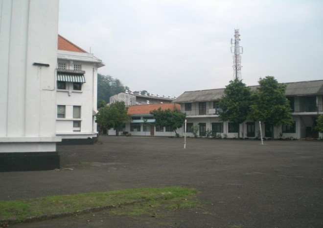

Sejarah Infolahta
Perjalanan dan Perkembangan Infolahta

Gedung Infolahta pada masa awal berdirinya
Pembentukan Satuan
Latar belakang pembentukan. Sejarah pembentukan Infolahta Kotama tak lepas dari pembentukan Dispullahtad yang merupakan induk dari pembinaan personel dan teknis di bidang sistem informasi.
a. Lahirnya Dispullahtad.
- Lahir dari penegasan Kasad dalam Rapim TNI AD tahun 1973 untuk mempersiapkan Sistem Informasi Pembinaan TNI AD (SIP AD), terutama dalam komputerisasi untuk pengumpulan dan pengolahan data secara cepat, tepat, dan efisien.
- Berdasarkan Perintah Kasad Nomor Prin/18/IV/1973 tanggal 4 April 1973, ditugaskan Paban IV SUAD/Renlitbang sebagai Perwira Proyek DPP Militer/Sipil TNI AD dengan komputer.
- Berdasarkan Skep/315/IX/1973 tanggal 11 September 1973, dibentuk Paban khusus SUAD/Renlitbang untuk mempersiapkan komputerisasi data personel, materiil dan finansial AD.
- Organisasi ini menjadi embrio Dispullahtad dan diresmikan berdasarkan Skep/275/III/1976 tanggal 8 Maret 1976 dengan kekuatan 101 personel. Kadispullahtad pertama: Kolonel Art Theo Sumantri.
- Dispullahtad berkedudukan langsung di bawah Kasad sebagai Badan Pelaksana Pusat di tingkat MABESAD.
- Tugas Pokok: Membantu Kasad, Staf Umum, dan Komando Utama di bidang pengumpulan, pengolahan, penyimpanan dan penyajian data. Dapat juga menerima tugas tambahan dari Kasad.
b. Lahirnya Pullahta Kodam VII/Diponegoro.
- Sejalan dengan diresmikannya Dispullahtad pada 8 Maret 1976, dibentuk juga Pullahta di tiap Kotama/Lakpus AD melalui Skep/609/V/1976 tanggal 5 Mei 1976. Maka terbentuk Bapullahta Kodam VII/Diponegoro dengan 29 personel.
- Pembentukan awal dilakukan bertahap karena keterbatasan personel dan sarana. Kodam VII/Diponegoro termasuk dalam tahap I bersama 7 Kotama lainnya, didukung 11 personel (3 perwira dan 8 PNS Kudam VII). Kapullahtadam pertama: Letkol Cpl Suwignyo.
"Teknologi informasi bukan hanya alat bantu, tetapi kekuatan utama dalam strategi pertahanan modern."